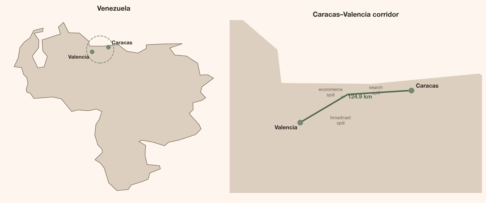
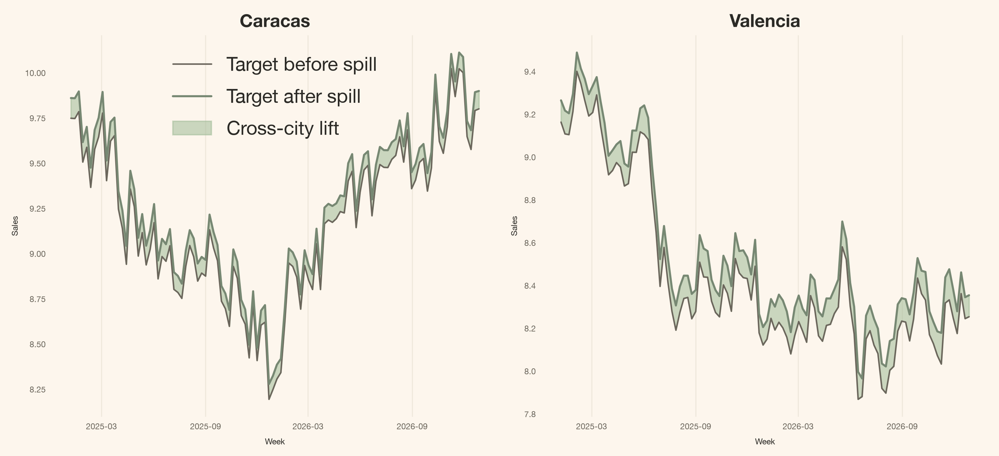
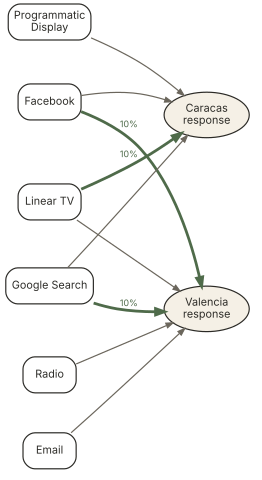
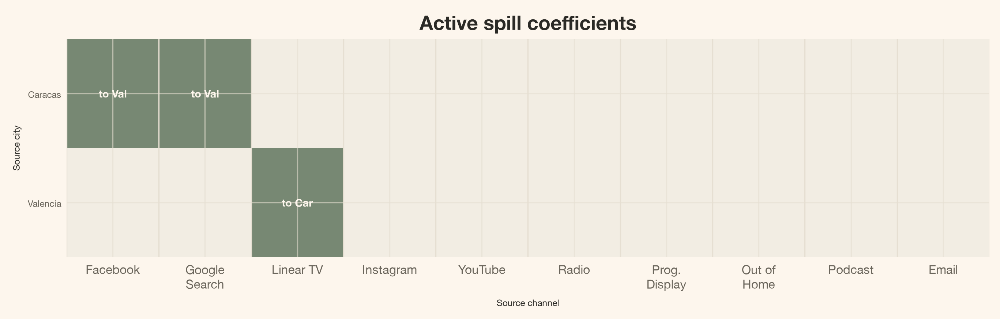
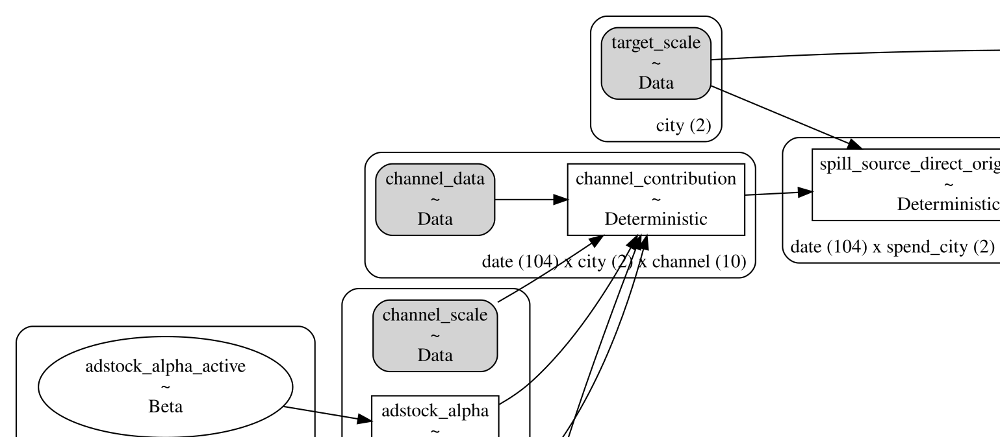
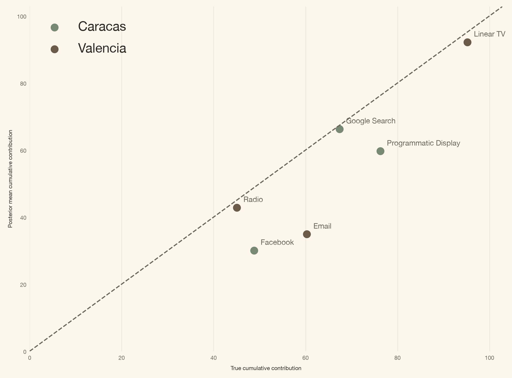
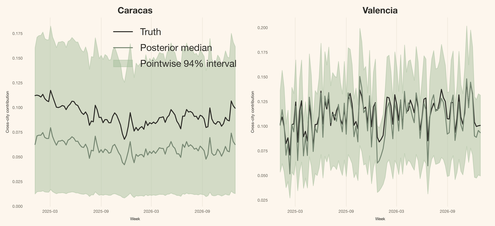

mmm.add_mu_effect(spill_effect)Media Does Not Stop at the City Border: Cross-City Spillovers with PyMC-Marketing
mmm
pymc-marketing
spillovers
bayesian
python
A geo-level Bayesian MMM with sparse cross-city spillovers built on PyMC-Marketing MuEffect, MaskedPrior, and a pre-specified route mask for multi-market media measurement.
Introduction
“I fit one marketing mix model per city, so every campaign belongs to the city where I booked the spend.”
This reporting convention can be quite beneficial, but it doesn’t always reflect the complexities of the real world. Media doesn’t know about boundaries; for instance, a launch in Caracas might boost branded searches in Valencia. Additionally, a creator campaign targeting Valencia could generate orders in entirely different locations. If we insist on treating each city as an isolated unit, those extra orders don’t just vanish; rather, the model simply mislabels them.
The silver lining is that PyMC-Marketing offers us an extension point to address this issue. We can maintain the foundational multidimensional MMM, implement an additive MuEffect, outline the possible routes using a Boolean mask, and seamlessly register it with a single line:
The remainder of this article will delve into the details of that line. We’ll start with the business context, followed by the equation, the tensor shapes, and finally, we’ll present the complete class.
Quick summary
This article walks you through:
- The data laboratory: two synthetic cities with three known spill routes, each carrying exactly 10% of the source channel’s true contribution.
- The PyMC-Marketing extension: a custom
MuEffectthat routes a share of one city’s media contribution into another city’s mean. - The sparse policy:
MaskedPriorsamples only three plausible spill coefficients rather than all twenty source-city-by-channel candidates. - The result: sampler diagnostics, direct-effect recovery, and posterior spill recovery against known ground truth.
The whole API idea
A multidimensional MMM(dims=("city",)) already produces channel_contribution with city and channel coordinates. A custom MuEffect can read that tensor, route a bounded share to another city, and return a (date, city) contribution to the model mean.
Theoretical lens
A regular MMM predicts the target Y_{r,t} in receiving city r at week t as a sum of different components:
Y_{r,t}=\beta_{r}+\mu^{\text{direct}}_{r,t}+C_{r,t}+\epsilon_{r,t}.
Where:
- \beta_{r} is the baseline, the intercept the model learns for city r;
- \mu^{\text{direct}}_{r,t} is the contribution of that city’s own media, after adstock and saturation;
- C_{r,t} is the contribution of the observed controls;
- \epsilon_{r,t} is the residual noise.
r is a city index, t is a time index, and everything on the right-hand side is learned from that city’s own spend, its own controls, and its own target. Many teams also carry a seasonality term. I leave it out here so the only structural difference between the two models in this article is the one the article is about. This is the base formula, and the most common in industry.
Today I approach this as a Bayesian measurement problem with structural knowledge. I design a mask that encodes which cross-city routes the business considers possible, and the posterior estimates how large those allowed effects are. That distinction matters. I am not running causal discovery to find out whether a route exists; I assume the topology and estimate the magnitudes. In causal-inference terms this is an interference problem: exposure assigned to one unit can change another unit’s outcome.
What exactly changes in the mean function?
The likelihood family stays the same. One term is added to the mean:
Y_{r,t}=\beta_{r}+\mu^{\text{direct}}_{r,t}+\boxed{S_{r,t}}+C_{r,t}+\epsilon_{r,t}.
Here S_{r,t} is the spill arriving in receiving city r: a bounded share of the direct contribution that another city’s media already produced. Every route share is capped at \rho_{\max}, so one route can never move more than \rho_{\max} of its source contribution across the border. In this article \rho_{\max}=0.20 and the synthetic truth is 0.10.
Like any other MMM, the model transforms spend before it reaches the mean: geometric adstock followed by Michaelis-Menten saturation. That is the same carryover-and-shape idea described by Jin et al. (2017), though not the same functional form: their paper uses a Hill response curve, and Michaelis-Menten is the member of that family with the exponent fixed at one.
Because the spill term is a share of a contribution that has already been through that chain, it arrives in the receiving city carrying the source channel’s own carryover and saturation.
Why a post-saturation multiplier is enough
The direct contribution of source channel k in city s, after adstock and Michaelis-Menten saturation, is
\mu^{\text{direct}}_{s,k,t} = \frac{\alpha_{s,k} \cdot \bar{x}_{s,k,t}}{\bar{x}_{s,k,t} + \lambda_{s,k}},
where \bar{x}_{s,k,t} is the adstocked spend, \alpha_{s,k} is the saturation capacity (the asymptotic ceiling), and \lambda_{s,k} is the half-saturation constant (the spend level at which contribution reaches half the ceiling).
The spill model multiplies that already-saturated contribution by the route share \rho_{s,k}, giving the amount a single route delivers to the receiving city:
S^{s,k}_{r,t} = \rho_{s,k} \cdot \mu^{\text{direct}}_{s,k,t} = \frac{(\rho_{s,k} \cdot \alpha_{s,k}) \cdot \bar{x}_{s,k,t}}{\bar{x}_{s,k,t} + \lambda_{s,k}}.
The algebra is the whole argument: \rho_{s,k} scales the ceiling \alpha_{s,k} and leaves the half-saturation \lambda_{s,k} untouched. A multiplier applied after saturation is therefore identical to fitting a separate saturation curve for each route, with capacity \rho_{s,k} \cdot \alpha_{s,k} and the same \lambda_{s,k} — the same contribution, at one parameter instead of two.
It matters that the multiplier stays there. Adstock is linear, so a scalar does pass through it: \text{adstock}(\rho x) = \rho \cdot \text{adstock}(x). Saturation is not, so \rho \cdot f(\bar{x}) \neq f(\rho \bar{x}) — pushing the share inside the curve would move the half-saturation point and bend the response into a different shape. Applying the share after saturation is what keeps the receiving city on the source city’s response curve instead of a distorted copy of it.
Getting started
First, the notebook setup and the imports.
Code
import json
import sys
import warnings
from pathlib import Path
warnings.filterwarnings("ignore", category=FutureWarning)
from typing import Any
from pydantic import Field, InstanceOf
from pymc_extras.prior import Prior
from pymc_marketing.mmm import GeometricAdstock, MichaelisMentenSaturation
from pymc_marketing.mmm.additive_effect import MuEffect
from pymc_marketing.mmm.mmm import MMM
from pymc_marketing.mmm.scaling import DataDerivedScaling, FixedScaling, Scaling
from pymc_marketing.special_priors import MaskedPrior
import arviz as az
import pymc as pm
import pymc.dims as pmd
import pymc_marketing
import numpy as np
import pandas as pd
import xarray as xr
import matplotlib as mpl
import matplotlib.pyplot as plt
import matplotlib.dates as mdates
from matplotlib.patches import FancyArrowPatch, FancyBboxPatch
az.style.use("arviz-darkgrid")
plt.rcParams["figure.figsize"] = [8, 4]
DATA_DIR = Path("data")
COLORS = {
"primary": "#778873",
"secondary": "#A1BC98",
"accent": "#DCCFC0",
"bg": "#FDF6ED",
"ink": "#2B2A26",
"ink_muted": "#6B665C",
"green_strong": "#4F6B4A",
"brown": "#6B5A48",
"line": "#E6DFD2",
"surface_alt": "#F2EDE3",
}
mpl.rcParams.update({
"figure.facecolor": COLORS["bg"],
"axes.facecolor": COLORS["bg"],
"axes.edgecolor": COLORS["line"],
"axes.labelcolor": COLORS["ink"],
"text.color": COLORS["ink"],
"xtick.color": COLORS["ink_muted"],
"ytick.color": COLORS["ink_muted"],
"grid.color": COLORS["line"],
"grid.alpha": 0.6,
"font.family": "sans-serif",
"font.sans-serif": ["Inter", "Manrope", "Helvetica Neue", "Arial"],
"axes.titleweight": "semibold",
"axes.titlesize": 13,
"axes.labelsize": 6,
"xtick.labelsize": 6,
"ytick.labelsize": 6,
"axes.spines.top": False,
"axes.spines.right": False,
"figure.dpi": 150,
"figure.constrained_layout.use": True,
})
%load_ext autoreload
%autoreload 2
%config InlineBackend.figure_format = "retina"
def article_table(
frame: pd.DataFrame,
caption: str,
formats: dict[str, str] | None = None,
):
"""Render a compact, left-aligned, index-free table."""
styled = (
frame.style
.hide(axis="index")
.set_caption(caption)
.set_properties(**{"text-align": "left"})
.set_table_styles([
{"selector": "th", "props": [("text-align", "left")]},
{"selector": "td", "props": [("text-align", "left")]},
])
)
return styled.format(formats) if formats else styled
seed: int = sum(map(ord, "media does not stop at the city border"))
rng: np.random.Generator = np.random.default_rng(seed=seed)
print(f"Seed: {seed}")Seed: 3567Now the synthetic data. I start from two weekly time series — think cities, regions, or countries — generated independently of each other, and then add spill from one to the other, in both directions.
I name them Caracas and Valencia. The names are a convenience: the two real cities sit close enough to make a cross-city corridor easy to picture, not because these synthetic routes describe anything that happens between them. Each has ten media channels, two observed controls, and 104 weekly observations. Three direct media paths reach the other city:
- Caracas Facebook \rightarrow Valencia
- Caracas Google Search \rightarrow Valencia
- Valencia Linear TV \rightarrow Caracas
Each path transfers 10% of the source channel’s true own-city contribution. Everything else is structurally absent.
Code
from matplotlib.patches import Circle
import urllib.request
import urllib.parse
import xml.etree.ElementTree as ET
caracas_coords = (-66.9036, 10.4806)
valencia_coords = (-68.0077, 10.1620)
with open(DATA_DIR / "venezuela_natural_earth.geojson") as f:
geo = json.load(f)
geom = geo["features"][0]["geometry"]
if geom["type"] == "Polygon":
polygons = [geom["coordinates"]]
elif geom["type"] == "MultiPolygon":
polygons = geom["coordinates"]
else:
raise ValueError(f"Unsupported geometry type: {geom['type']}")
exterior_rings = [np.asarray(polygon[0], dtype=float) for polygon in polygons]
margin = 0.7
rect_x = [min(caracas_coords[0], valencia_coords[0]) - margin,
max(caracas_coords[0], valencia_coords[0]) + margin]
rect_y = [min(caracas_coords[1], valencia_coords[1]) - margin,
max(caracas_coords[1], valencia_coords[1]) + margin]
mid_lon = (caracas_coords[0] + valencia_coords[0]) / 2
mid_lat = (caracas_coords[1] + valencia_coords[1]) / 2
circle_radius = np.sqrt(
((caracas_coords[0] - valencia_coords[0]) ** 2)
+ ((caracas_coords[1] - valencia_coords[1]) ** 2)
) / 2 + 0.35
fig, (ax_overview, ax_inset) = plt.subplots(
1, 2, figsize=(12, 5.5), gridspec_kw={"width_ratios": [1, 1.15]},
)
# --- Overview panel ---
for coords in exterior_rings:
ax_overview.fill(coords[:, 0], coords[:, 1],
facecolor=COLORS["accent"], edgecolor=COLORS["brown"], linewidth=0.8)
for label, (lon, lat), ofs in [
("Caracas", caracas_coords, (6, 5)),
("Valencia", valencia_coords, (-42, -12)),
]:
ax_overview.plot(lon, lat, "o", color=COLORS["primary"], markersize=7, zorder=5)
ax_overview.annotate(label, (lon, lat), textcoords="offset points",
xytext=ofs, fontsize=9, weight=600)
circle = Circle(
(mid_lon, mid_lat), circle_radius, fill=False, color=COLORS["primary"], linewidth=1.2,
linestyle="--"
)
ax_overview.add_patch(circle)
ax_overview.set_title("Venezuela", fontsize=12, weight=600)
ax_overview.set_aspect("equal")
ax_overview.axis("off")
# --- Overpass streets in the corridor inset ---
road_segments = []
bbox = (
min(rect_y[0], rect_y[1]),
min(rect_x[0], rect_x[1]),
max(rect_y[0], rect_y[1]),
max(rect_x[0], rect_x[1]),
)
overpass_query = (
f'way["highway"]({bbox[0]},{bbox[1]},{bbox[2]},{bbox[3]});'
f'(._;>;);out body;'
)
try:
overpass_url = (
"https://overpass-api.de/api/interpreter?"
+ urllib.parse.urlencode({"data": overpass_query})
)
with urllib.request.urlopen(overpass_url, timeout=30) as resp:
root = ET.fromstring(resp.read())
node_xy = {}
for node in root.findall("node"):
node_xy[node.get("id")] = (float(node.get("lon")), float(node.get("lat")))
for way in root.findall("way"):
refs = [nd.get("ref") for nd in way.findall("nd")]
coords = np.asarray(
[node_xy[r] for r in refs if r in node_xy], dtype=float
)
if coords.size:
road_segments.append(coords)
except Exception:
road_segments = []
# --- Corridor inset ---
ax_inset.set_facecolor(COLORS["bg"])
ax_inset.set_xlim(rect_x)
ax_inset.set_ylim(rect_y)
for coords in exterior_rings:
ax_inset.fill(coords[:, 0], coords[:, 1],
facecolor=COLORS["accent"], edgecolor=COLORS["line"], linewidth=0.5)
for seg in road_segments:
ax_inset.plot(seg[:, 0], seg[:, 1], color=COLORS["line"], linewidth=0.6, alpha=0.85)
route_lon = [caracas_coords[0], mid_lon - 0.08, valencia_coords[0]]
route_lat = [caracas_coords[1], mid_lat + 0.12, valencia_coords[1]]
ax_inset.plot(route_lon, route_lat, color=COLORS["green_strong"], linewidth=2.6, zorder=4)
for label, (lon, lat), ofs in [
("Caracas", caracas_coords, (8, 5)),
("Valencia", valencia_coords, (-45, -12)),
]:
ax_inset.plot(lon, lat, "o", color=COLORS["primary"], markersize=9, zorder=5)
ax_inset.annotate(label, (lon, lat), textcoords="offset points",
xytext=ofs, fontsize=10, weight=600, zorder=5)
ax_inset.annotate(
"$\\approx$ 124.9 km", (mid_lon, mid_lat), textcoords="offset points",
xytext=(0, 14), fontsize=10, ha="center", weight=600, color=COLORS["green_strong"], zorder=5,
)
for mech_label, (dx, dy) in [
("broadcast\nspill", (-0.15, -0.18)),
("search\nspill", (0.20, 0.12)),
("ecommerce\nspill", (-0.25, 0.10)),
]:
ax_inset.annotate(
mech_label, (mid_lon + dx, mid_lat + dy), textcoords="offset points",
xytext=(0, 0), fontsize=8, ha="center", color=COLORS["ink_muted"], zorder=5,
)
ax_inset.grid(False)
ax_inset.set_title("Caracas\u2013Valencia corridor", fontsize=12, weight=600)
ax_inset.set_aspect("equal")
ax_inset.axis("off")
plt.tight_layout()
plt.show()
Code
CITIES = ("Caracas", "Valencia")
CHANNELS = [
"facebook", "google_search", "linear_tv", "instagram", "youtube",
"radio", "programmatic_display", "out_of_home", "podcast", "email",
]
CHANNEL_LABELS = dict(zip(
CHANNELS,
[
"Facebook", "Google Search", "Linear TV", "Instagram", "YouTube",
"Radio", "Programmatic Display", "Out of Home", "Podcast", "Email",
],
strict=True,
))
CONTROLS = ["Z1", "Z2"]
TRUE_SPILL_SHARE = 0.10
PANEL_DIMS = ("city",)
PANEL_CHANNEL_DIMS = ("city", "channel")
PANEL_CONTROL_DIMS = ("city", "control")
SPEND_DIMS = ("spend_city",)
SPEND_CHANNEL_DIMS = ("spend_city", "channel")
SPILL_PATH_DIMS = ("city", "spend_city", "channel")
SPEND_RENAME = {"city": "spend_city"}
SPILL_ROUTES = (
("Caracas", "Valencia", "facebook"),
("Caracas", "Valencia", "google_search"),
("Valencia", "Caracas", "linear_tv"),
)
valencia_raw = pd.read_csv(DATA_DIR / "valencia_raw.csv", parse_dates=["date"])
caracas_raw = pd.read_csv(DATA_DIR / "caracas_raw.csv", parse_dates=["date"])
valencia_truth = pd.read_csv(DATA_DIR / "valencia_contributions.csv", parse_dates=["date"])
caracas_truth = pd.read_csv(DATA_DIR / "caracas_contributions.csv", parse_dates=["date"])
assert valencia_raw["date"].equals(caracas_raw["date"])
assert valencia_truth["date"].equals(caracas_truth["date"])
valencia = valencia_raw.rename(columns={"Y": "y_base"}).copy()
caracas = caracas_raw.rename(columns={"Y": "y_base"}).copy()
valencia["spill_truth"] = TRUE_SPILL_SHARE * (
caracas_truth["contrib_facebook"].to_numpy()
+ caracas_truth["contrib_google_search"].to_numpy()
)
caracas["spill_truth"] = TRUE_SPILL_SHARE * valencia_truth["contrib_linear_tv"].to_numpy()
for frame in (valencia, caracas):
frame["y"] = frame["y_base"] + frame["spill_truth"]
panel = pd.concat([caracas, valencia], ignore_index=True).sort_values(
["date", "city"], ignore_index=True
)
spill_columns = [
"contrib_spill_from_caracas_facebook",
"contrib_spill_from_caracas_google_search",
"contrib_spill_from_valencia_linear_tv",
]
for frame in (caracas_truth, valencia_truth):
for column in spill_columns:
frame[column] = 0.0
valencia_truth["contrib_spill_from_caracas_facebook"] = (
TRUE_SPILL_SHARE * caracas_truth["contrib_facebook"].to_numpy()
)
valencia_truth["contrib_spill_from_caracas_google_search"] = (
TRUE_SPILL_SHARE * caracas_truth["contrib_google_search"].to_numpy()
)
caracas_truth["contrib_spill_from_valencia_linear_tv"] = (
TRUE_SPILL_SHARE * valencia_truth["contrib_linear_tv"].to_numpy()
)
truth = pd.concat([caracas_truth, valencia_truth], ignore_index=True).sort_values(
["date", "city"], ignore_index=True
)
truth["contrib_spill_total"] = truth[spill_columns].sum(axis=1)
model_data = panel[["date", "city", *CHANNELS, *CONTROLS, "y"]].rename(columns={"y": "Y"})
model_data.to_csv(DATA_DIR / "mmm_data_raw.csv", index=False)
truth.to_csv(DATA_DIR / "mmm_data_contributions.csv", index=False)
assert np.allclose(panel["y"] - panel["y_base"], panel["spill_truth"])
assert np.allclose(
panel["spill_truth"].to_numpy(), truth["contrib_spill_total"].to_numpy()
)
assert truth["contrib_spill_total"].abs().sum() > 0
X = panel[["date", "city", *CHANNELS, *CONTROLS]]
y = panel["y"]
schema_rows = [
{"Column": "date", "Type": "datetime", "Role": "time index"},
{"Column": "city", "Type": "str", "Role": "panel dimension"},
]
for ch in CHANNELS:
schema_rows.append({"Column": ch, "Type": "float", "Role": "media channel"})
schema_rows += [
{"Column": "Z1", "Type": "float", "Role": "control"},
{"Column": "Z2", "Type": "float", "Role": "control"},
{"Column": "Y", "Type": "float", "Role": "target"},
]
display(article_table(pd.DataFrame(schema_rows), "Input panel schema"))| Column | Type | Role |
|---|---|---|
| date | datetime | time index |
| city | str | panel dimension |
| float | media channel | |
| google_search | float | media channel |
| linear_tv | float | media channel |
| float | media channel | |
| youtube | float | media channel |
| radio | float | media channel |
| programmatic_display | float | media channel |
| out_of_home | float | media channel |
| podcast | float | media channel |
| float | media channel | |
| Z1 | float | control |
| Z2 | float | control |
| Y | float | target |
The panel that enters the MMM contains 208 weekly rows (104 weeks × 2 cities). Each row carries the ten raw media-spend channels, two observed controls, and the sales target. The generator writes two panel files — mmm_data_raw.csv for the observables and mmm_data_contributions.csv for the true per-channel decomposition used only in scoring — alongside the per-city inputs and contribution breakdowns under data/.
The representative rows below show a subset of the columns the MMM actually sees.
Code
preview_columns = [
"date", "city", "facebook", "google_search", "linear_tv", "Z1", "Z2", "Y",
]
model_preview = (
model_data[preview_columns]
.groupby("city")
.head(2)
.reset_index(drop=True)
)
model_preview["date"] = model_preview["date"].dt.strftime("%Y-%m-%d")
display(article_table(
model_preview,
"Representative MMM input rows (two per city; three channels shown)",
{column: "{:.3f}" for column in preview_columns[2:]},
))| date | city | google_search | linear_tv | Z1 | Z2 | Y | |
|---|---|---|---|---|---|---|---|
| 2025-01-06 | Caracas | 0.968 | 3.587 | 3.742 | 3.017 | -2.007 | 9.856 |
| 2025-01-06 | Valencia | 2.100 | 1.251 | 2.850 | 0.746 | 0.936 | 9.262 |
| 2025-01-13 | Caracas | 0.832 | 4.058 | 3.852 | 2.974 | -1.959 | 9.855 |
| 2025-01-13 | Valencia | 2.185 | 3.278 | 3.229 | 0.705 | 0.939 | 9.214 |
The contribution files (caracas_contributions.csv, valencia_contributions.csv) record the true channel-level decomposition used for scoring. Their magnitudes remain held out; the only information derived from that decomposition and supplied to the MMM is the six-path direct-activity mask I build later, when the model is assembled. The likelihood otherwise sees the target, observed media spend, and controls.
Let V and C abbreviate Valencia and Caracas, and let \tau_{s,k,t} denote channel k’s true own-city contribution in source city s at week t. Then:
\begin{aligned} Y^{\star}_{V,t} &= Y_{V,t} \\ &\quad + 0.10\,\tau_{C,\text{Facebook},t} \\ &\quad + 0.10\,\tau_{C,\text{Google Search},t}, \\ Y^{\star}_{C,t} &= Y_{C,t} + 0.10\,\tau_{V,\text{Linear TV},t}. \end{aligned}
The multiplier is fixed at 10% in the data-generating process. The model will not receive those contribution columns; they remain behind the curtain for scoring.
Why an independent-city MMM fails
Code
fig, axes = plt.subplots(1, 2, figsize=(10, 4.5), sharex=True)
for ax, city in zip(axes, CITIES, strict=True):
city_data = panel.loc[panel["city"].eq(city)]
ax.plot(city_data["date"], city_data["y_base"], color=COLORS["ink_muted"],
linewidth=1.1, label="Target before spill")
ax.plot(city_data["date"], city_data["y"], color=COLORS["primary"],
linewidth=1.5, label="Target after spill")
ax.fill_between(
city_data["date"], city_data["y_base"], city_data["y"],
color=COLORS["secondary"], alpha=0.55, label="Cross-city lift",
)
ax.set(title=city, xlabel="Week", ylabel="Sales")
ax.grid(axis="y")
ax.xaxis.set_major_locator(mdates.MonthLocator(interval=6))
ax.xaxis.set_major_formatter(mdates.DateFormatter("%Y-%m"))
axes[0].legend(frameon=False, loc="best")
plt.show()
The familiar model fits each city with its own channels, controls, and baseline:
Y_{r,t}=\beta_{r}+\mu^{\text{direct}}_{r,t}+C_{r,t}+\epsilon_{r,t}.
That model may predict well. It still has no route where a source city s differs from the receiving city r. The shaded signal in Figure 2 must leak into direct attribution, the baseline, controls, or residual noise.
This is the controlled failure. The problem is not that the base MMM is badly implemented. The problem is that its mean function cannot express the business mechanism.
Could I just add the other city’s raw spend as controls? I could, but then I would estimate a second response curve disconnected from the source campaign’s adstock and saturation. Reusing the source contribution is both more parsimonious and easier to interpret.
Written out route by route, the new term is:
\begin{aligned} Y_{r,t} &= \beta_{r} + \mu^{\text{direct}}_{r,t} + S_{r,t} + C_{r,t} + \epsilon_{r,t}, \\ S_{r,t} &= \sum_{s\neq r}\sum_{k=1}^{K} M_{r,s,k}\,\rho_{s,k} \\ &\qquad \times g_{s,k}(X_{s,k,t}). \end{aligned}
where:
- S_{r,t} is the total spill arriving in receiving city r;
- g_{s,k}(X_{s,k,t}) is the direct contribution evaluated from the same model graph after adstock and saturation;
- M_{r,s,k}\in\{0,1\} is the pre-specified route mask;
- \rho_{s,k} is the learned share exported by source city s and channel k;
- the sum returns one spill contribution for each receiving city r and week t.
One additive effect is enough to encode sparse cross-city spill
The Bayesian measurement lens now becomes an engineering constraint: preserve the source response, fix the routes supplied by prior knowledge, and estimate only their uncertain magnitudes.
10% of the source channel’s own contribution
Code
import graphviz
K = COLORS["ink"]
K2 = COLORS["ink_muted"]
G = COLORS["green_strong"]
def obs(label):
return {
"label": label, "shape": "box", "style": "rounded,filled",
"fillcolor": "white", "color": K, "fontcolor": K, "fontsize": "11",
"penwidth": "1.2", "fontname": "Inter",
}
def lat(label):
return {
"label": label, "shape": "ellipse", "style": "filled",
"fillcolor": "#f5f0e6", "color": K, "fontcolor": K, "fontsize": "11",
"penwidth": "1.2", "fontname": "Inter",
}
def loc():
return {"color": K2, "penwidth": "1.2", "arrowsize": "0.7"}
def spl():
return {
"color": G, "penwidth": "2.8", "arrowsize": "0.9",
"fontname": "Inter", "fontcolor": G, "fontsize": "9",
}
g = graphviz.Digraph(format="svg", engine="dot")
g.attr(rankdir="LR", bgcolor="transparent", margin="0.1", nodesep="0.55",
ranksep="0.65", fontname="Inter")
# Caracas spend nodes
g.node("fb", **obs("Facebook"))
g.node("gs", **obs("Google Search"))
g.node("pd", **obs("Programmatic\nDisplay"))
g.node("R_ccs", **lat("Caracas\nresponse"))
# Valencia spend nodes
g.node("ltv", **obs("Linear TV"))
g.node("rad", **obs("Radio"))
g.node("em", **obs("Email"))
g.node("R_val", **lat("Valencia\nresponse"))
# Local edges
g.edge("fb", "R_ccs", **loc())
g.edge("gs", "R_ccs", **loc())
g.edge("pd", "R_ccs", **loc())
g.edge("ltv", "R_val", **loc())
g.edge("rad", "R_val", **loc())
g.edge("em", "R_val", **loc())
# Cross-city spill
g.edge("fb", "R_val", label=" 10% ", **spl())
g.edge("gs", "R_val", label=" 10% ", **spl())
g.edge("ltv", "R_ccs", label=" 10% ", **spl())
from IPython.display import SVG, display as ipy_display
svg_bytes = g.pipe(format="svg")
ipy_display(SVG(svg_bytes))
A pre-specified route mask
With two cities and ten channels, there are twenty possible source-city-by-channel spill coefficients. In this synthetic design, I allow three. The other seventeen should not be weakly regularized or estimated near zero. They should not exist in the graph.
Code
spill_mask_values = np.zeros(
(len(CITIES), len(CITIES), len(CHANNELS)), dtype=bool
)
for source_city, receiver_city, channel in SPILL_ROUTES:
spill_mask_values[
CITIES.index(receiver_city),
CITIES.index(source_city),
CHANNELS.index(channel),
] = True
spill_path_mask = xr.DataArray(
spill_mask_values,
dims=SPILL_PATH_DIMS,
coords={
"city": list(CITIES),
"spend_city": list(CITIES),
"channel": CHANNELS,
},
)
source_active_mask = spill_path_mask.any("city").transpose(*SPEND_CHANNEL_DIMS)
assert int(source_active_mask.sum()) == len(SPILL_ROUTES) == 3Code
fig, ax = plt.subplots(figsize=(9, 2.8))
mask_plot = source_active_mask.astype(int)
cmap = mpl.colors.ListedColormap([COLORS["surface_alt"], COLORS["primary"]])
ax.imshow(mask_plot, aspect="auto", cmap=cmap, vmin=0, vmax=1)
display_labels = [
"Facebook", "Google\nSearch", "Linear TV", "Instagram", "YouTube",
"Radio", "Prog.\nDisplay", "Out of\nHome", "Podcast", "Email",
]
ax.set_xticks(range(len(CHANNELS)), display_labels, fontsize=8)
ax.set_yticks(range(len(CITIES)), CITIES)
ax.set(xlabel="Source channel", ylabel="Source city")
for row, city in enumerate(CITIES):
for col, channel in enumerate(CHANNELS):
if bool(source_active_mask.sel(spend_city=city, channel=channel)):
receiver = next(
target for source, target, route_channel in SPILL_ROUTES
if source == city and route_channel == channel
)
ax.text(col, row, f"to {receiver[:3]}", ha="center", va="center",
color=COLORS["bg"], fontsize=7, weight=600)
for x in np.arange(-0.5, len(CHANNELS), 1):
ax.axvline(x, color=COLORS["line"], linewidth=0.8)
ax.set_title("Active spill coefficients")
plt.show()
MaskedPrior is a gate, not a shrinkage prior
The wrapped prior is sampled only where the mask is True, then expanded back to the full labeled tensor with exact zeros elsewhere.
The custom effect reuses what the MMM already knows
I call this class SpillEffect. It inherits PyMC-Marketing’s MuEffect protocol.
SpillEffect has three responsibilities:
- Register spatial coordinates and the pre-specified route mask.
create_dataadds aspend_citycoordinate (mirroringcity) and stores the Boolean path mask as a model constant. The mask comes from prior business knowledge—broadcast footprints, campaign eligibility, distribution territories—not from the outcome. - Sample bounded spill shares only on active source-channel pairs.
create_effectwraps aMaskedPriorover a \operatorname{Beta}(1,1) base prior, so only the allowed routes receive a free parameter. - Route the model-owned direct contribution to the receiving city and return
(date, city). The effect readschannel_contributionfrom the model’s own forward pass, multiplies by the bounded share and the route mask, and sums over sources.
I model
u_{s,k}\sim\operatorname{Beta}(1,1), \qquad \rho_{s,k}=\rho_{\max}u_{s,k},
with \rho_{\max}=0.20. The synthetic truth is 0.10, so it sits inside — not on the boundary of — the model’s plausible interval.
class SpillEffect(MuEffect):
"""Route a bounded share of direct media contribution across cities."""
source_active_mask: InstanceOf[xr.DataArray] = Field(exclude=True)
spill_path_mask: InstanceOf[xr.DataArray] = Field(exclude=True)
fraction_prior: InstanceOf[Prior]
max_share: float = Field(default=0.20, gt=0, le=1)
prefix: str = "spill"
@staticmethod
def _serialize_mask(mask: xr.DataArray) -> dict[str, Any]:
"""Convert a fixed Boolean mask to JSON-compatible values."""
return {
"dims": list(mask.dims),
"coords": {dim: mask.coords[dim].values.tolist() for dim in mask.dims},
"values": mask.astype(bool).values.tolist(),
}
@property
def contribution_var_name(self) -> str:
"""Name of the deterministic contribution stored in the posterior."""
return f"{self.prefix}_contribution"
def to_dict(self) -> dict[str, Any]:
"""Serialize the custom effect for inference-data provenance."""
return {
"prefix": self.prefix,
"max_share": self.max_share,
"fraction_prior": self.fraction_prior.to_dict(),
"source_active_mask": self._serialize_mask(self.source_active_mask),
"spill_path_mask": self._serialize_mask(self.spill_path_mask),
}
def create_data(self, mmm: Any) -> None:
"""Register the source-city coordinate and route mask."""
model = mmm.model
model.add_coord("spend_city", values=model.coords["city"])
pmd.Data(
f"{self.prefix}_path_mask",
self.spill_path_mask.astype(float).values,
dims=SPILL_PATH_DIMS,
)
def create_effect(self, mmm: Any):
"""Build one spill contribution per week and receiving city."""
model = mmm.model
fraction = MaskedPrior(
self.fraction_prior,
mask=self.source_active_mask,
active_dim=f"{self.prefix}_active_source_channel",
).create_variable(f"{self.prefix}_fraction", xdist=True)
total_share = pmd.Deterministic(
f"{self.prefix}_total_share",
(self.max_share * fraction).transpose(*SPEND_CHANNEL_DIMS),
)
path_share = pmd.Deterministic(
f"{self.prefix}_path_share",
(total_share * model[f"{self.prefix}_path_mask"]).transpose(
*SPILL_PATH_DIMS
),
)
source_direct_original = pmd.Deterministic(
f"{self.prefix}_source_direct_original_scale",
(model["channel_contribution"] * model["target_scale"])
.rename(SPEND_RENAME)
.transpose("date", *SPEND_CHANNEL_DIMS),
)
by_path_original = pmd.Deterministic(
f"{self.prefix}_by_path_original_scale",
(source_direct_original * path_share).transpose(
"date", *SPILL_PATH_DIMS
),
)
contribution_original = pmd.Deterministic(
f"{self.prefix}_contribution_original_scale",
by_path_original.sum(dim=(*SPEND_DIMS, "channel")).transpose(
"date", *PANEL_DIMS
),
)
return pmd.Deterministic(
f"{self.prefix}_contribution",
(contribution_original / model["target_scale"]).transpose(
"date", *PANEL_DIMS
),
)
def set_data(self, mmm: Any, model: pm.Model, X: xr.Dataset) -> None:
"""No-op: this effect owns no mutable predictors.
The MMM refreshes model-owned channel contribution data before the
effect runs. Implement updates here only when the effect introduces
its own covariates — for example, future receiver-specific modifiers
or time-varying route availability.
"""
del mmm, model, XMost of the class is named tensor bookkeeping. The actual model change is the short chain inside create_effect:
\begin{gathered} \text{direct contribution} \\ \times\ \text{bounded share} \\ \times\ \text{route mask} \\ \downarrow\ \sum_{s,k} \\ \text{spill by receiving city} \end{gathered}
One extra effect is all the MMM needs
To keep the demonstration about spill rather than variable selection, the synthetic generator supplies a pre-specified direct activity mask: six city-channel response curves are known to exist before the MMM is fitted. It is not inferred from the observed target. In real work, define that mask from channel availability, prior business knowledge, or a proper variable-selection strategy.
Code
contribution_columns = [f"contrib_{channel}" for channel in CHANNELS]
direct_activity = (
truth.groupby("city")[contribution_columns]
.sum()
.abs()
.gt(1e-10)
.reindex(CITIES)
)
direct_activity.columns = CHANNELS
direct_path_mask = xr.DataArray(
direct_activity.to_numpy(),
dims=PANEL_CHANNEL_DIMS,
coords={"city": list(CITIES), "channel": CHANNELS},
)
assert int(direct_path_mask.sum()) == 6Because channels and targets are max-scaled, the response priors below live on a comparable scale across cities. A positive intercept removes a spurious negative-baseline mode, while a log-normal half-saturation prior keeps the sampler away from a zero-boundary funnel. These are identifiability and sampling choices, not evidence about the spill routes.
adstock = GeometricAdstock(
l_max=4,
priors={
"alpha": MaskedPrior(
Prior("Beta", alpha=2, beta=2, dims=PANEL_CHANNEL_DIMS),
mask=direct_path_mask,
active_dim="direct_active_city_channel",
)
},
)
saturation = MichaelisMentenSaturation(
priors={
"alpha": MaskedPrior(
Prior("Gamma", mu=0.20, sigma=0.15, dims=PANEL_CHANNEL_DIMS),
mask=direct_path_mask,
active_dim="direct_active_city_channel",
),
"lam": MaskedPrior(
Prior("LogNormal", mu=-0.69, sigma=0.75, dims=PANEL_CHANNEL_DIMS),
mask=direct_path_mask,
active_dim="direct_active_city_channel",
),
}
)
spill_effect = SpillEffect(
source_active_mask=source_active_mask,
spill_path_mask=spill_path_mask,
fraction_prior=Prior("Beta", alpha=1, beta=1, dims=SPEND_CHANNEL_DIMS),
max_share=0.20,
)
target_scale = panel.groupby("city")["y"].max().reindex(CITIES)
target_scale_array = xr.DataArray(
target_scale.to_numpy(),
dims=PANEL_DIMS,
coords={"city": list(CITIES)},
)
mmm = MMM(
date_column="date",
target_column="y",
channel_columns=CHANNELS,
control_columns=CONTROLS,
dims=PANEL_DIMS,
model_config={
"intercept": Prior("HalfNormal", sigma=1, dims=PANEL_DIMS),
"gamma_control": Prior(
"Normal", mu=0, sigma=0.10, dims=PANEL_CONTROL_DIMS
),
"likelihood": Prior(
"Normal",
sigma=Prior("HalfNormal", sigma=0.02, dims=PANEL_DIMS),
dims=("date", *PANEL_DIMS),
),
},
scaling=Scaling(
channel=DataDerivedScaling(method="max", dims=()),
target=FixedScaling(dims=(), value=target_scale_array),
),
adstock=adstock,
saturation=saturation,
)
mmm.add_mu_effect(spill_effect)
mmm.build_model(X, y)
mmm.add_original_scale_contribution_variable(
["y", "channel_contribution", "control_contribution", "intercept_contribution"]
)<pymc_marketing.mmm.mmm.MMM at 0x330a01fd0>The model graph should contain exactly three free spill parameters. That is the computational payoff of the mask.
Code
initial_point = mmm.model.initial_point()
spill_key = next(name for name in initial_point if name.startswith("spill_fraction_active"))
assert initial_point[spill_key].size == len(SPILL_ROUTES) == 3
assert np.isfinite(mmm.model.compile_logp()(initial_point))
free_rv_names = sorted(variable.name for variable in mmm.model.free_RVs)
model_structure = pd.DataFrame({
"Layer": ["Panel", "Direct media", "Cross-city spill", "Likelihood"],
"Estimated structure": [
"2 city intercepts + 4 control coefficients",
"6 active city-channel response curves",
"3 bounded shares from 20 candidates",
"2 city-specific residual scales",
],
})
display(article_table(model_structure, "What the model samples"))| Layer | Estimated structure |
|---|---|
| Panel | 2 city intercepts + 4 control coefficients |
| Direct media | 6 active city-channel response curves |
| Cross-city spill | 3 bounded shares from 20 candidates |
| Likelihood | 2 city-specific residual scales |
Code
import graphviz as _graphviz
g = pm.model_to_graphviz(
mmm.model,
var_names=["spill_contribution"],
graph_attr={"rankdir": "LR", "dpi": "150"},
)
assert "channel_contribution" in g.source
assert "spill_contribution" in g.source
g
The graph above is computational, not causal. It is a focused subgraph of the built PyMC model: raw channel spend enters through adstock and saturation, produces channel_contribution, and the SpillEffect multiplies that tensor by the bounded spill share and route mask. The diagram stops at spill_contribution for readability; the base MMM then adds that output to its direct, baseline, and control terms in the target likelihood.
The sparse route model recovers the mechanism without false precision
First the sampler diagnostics and the structural invariants, then what the data can actually say about the size of the three allowed routes.
Basic sampler diagnostics
Code
idata = mmm.fit(
X=X,
y=y,
chains=4,
cores=4,
draws=1_000,
tune=1_500,
target_accept=0.95,
random_seed=seed,
progressbar=False,
)Code
free_rv_names = sorted(variable.name for variable in mmm.model.free_RVs)
diagnostics = az.summary(idata, var_names=free_rv_names, round_to=6)
divergences = int(idata.sample_stats["diverging"].sum())
rhat = pd.to_numeric(diagnostics["r_hat"], errors="coerce")
ess_bulk = pd.to_numeric(diagnostics["ess_bulk"], errors="coerce")
ess_tail = pd.to_numeric(diagnostics["ess_tail"], errors="coerce")
max_rhat = float(rhat.max())
min_ess_bulk = float(ess_bulk.min())
min_ess_tail = float(ess_tail.min())
chains = int(idata.posterior.dims["chain"])
diagnostic_overview = pd.DataFrame({
"Metric": [
"Divergences", "Maximum r-hat", "Minimum bulk ESS", "Minimum tail ESS",
],
"Observed": [
f"{divergences}", f"{max_rhat:.3f}", f"{min_ess_bulk:.0f}", f"{min_ess_tail:.0f}",
],
"Gate": ["= 0", "< 1.01", f"> 400 ({chains} chains)", f"> 400 ({chains} chains)"],
"Status": [
"Pass" if divergences == 0 else "Fail",
"Pass" if max_rhat < 1.01 else "Fail",
"Pass" if min_ess_bulk > 400 else "Fail",
"Pass" if min_ess_tail > 400 else "Fail",
],
})
display(article_table(diagnostic_overview, "Sampler quality gates"))
assert divergences == 0
assert max_rhat < 1.01
assert min_ess_bulk > 400
assert min_ess_tail > 400| Metric | Observed | Gate | Status |
|---|---|---|---|
| Divergences | 0 | = 0 | Pass |
| Maximum r-hat | 1.003 | < 1.01 | Pass |
| Minimum bulk ESS | 1243 | > 400 (4 chains) | Pass |
| Minimum tail ESS | 968 | > 400 (4 chains) | Pass |
A posterior is only useful after it passes basic sampler diagnostics. The thresholds in that gate—zero divergences, \hat{R} < 1.01, and effective sample sizes above 400—follow standard MCMC practice. Divergent transitions signal regions of high curvature where the sampler cannot explore reliably (Betancourt, 2017, §6.2). The \hat{R} threshold and the ESS floor of 400 total draws (≈100 per chain with four chains) come from the rank-normalized convergence diagnostic of Vehtari et al. (2021).
Separately, I verify structural invariants encoded by the tensor algebra: diagonal routes are exactly zero, inactive paths remain zero, and every spill share stays below the 20% cap. These are implementation sanity checks, not posterior-quality diagnostics.
Code
posterior = idata.posterior
path_share = posterior["spill_path_share"]
total_share = posterior["spill_total_share"]
assert bool((total_share >= 0).all())
assert bool((total_share <= spill_effect.max_share + 1e-10).all())
assert bool((path_share.where(~spill_path_mask, 0) == 0).all())
for city in CITIES:
assert bool(
(path_share.sel(city=city, spend_city=city) == 0).all()
)
graph_checks = pd.DataFrame({
"Invariant": [
"All shares are bounded between 0% and 20%",
"Inactive source-receiver-channel paths are exactly zero",
"Every same-city spill path is exactly zero",
],
"Status": ["Pass", "Pass", "Pass"],
})
display(article_table(graph_checks, "Spill-graph structural invariants (by construction)"))| Invariant | Status |
|---|---|
| All shares are bounded between 0% and 20% | Pass |
| Inactive source-receiver-channel paths are exactly zero | Pass |
| Every same-city spill path is exactly zero | Pass |
Direct attribution is uneven, and spill inherits that uncertainty
Before trusting the spill result, I check the base MMM. Each point below is one active own-city channel. Perfect cumulative recovery lies on the diagonal. Several paths are close; Facebook, Programmatic Display, and Email are understated. That miss matters: spill inherits the source channel’s modeled contribution, so error in direct attribution travels with it.
Code
post_direct_total = (
posterior["channel_contribution_original_scale"]
.sum("date")
.mean(("chain", "draw"))
)
true_direct_total = (
truth.groupby("city")[contribution_columns]
.sum()
.reindex(CITIES)
)
true_direct_total.columns = CHANNELS
rows = []
for city in CITIES:
for channel in CHANNELS:
if bool(direct_path_mask.sel(city=city, channel=channel)):
rows.append({
"city": city,
"channel": channel,
"truth": float(true_direct_total.loc[city, channel]),
"posterior": float(post_direct_total.sel(city=city, channel=channel)),
})
direct_recovery = pd.DataFrame(rows)
direct_recovery["relative_error"] = (
direct_recovery["posterior"] / direct_recovery["truth"] - 1
)
direct_recovery_display = direct_recovery.assign(
channel=direct_recovery["channel"].map(CHANNEL_LABELS)
)
display(article_table(
direct_recovery_display.rename(columns={
"city": "City",
"channel": "Channel",
"truth": "Truth",
"posterior": "Posterior mean",
"relative_error": "Relative error",
}),
"Cumulative direct-contribution recovery",
{
"Truth": "{:.2f}",
"Posterior mean": "{:.2f}",
"Relative error": "{:+.1%}",
},
))| City | Channel | Truth | Posterior mean | Relative error |
|---|---|---|---|---|
| Caracas | 48.81 | 30.06 | -38.4% | |
| Caracas | Google Search | 67.38 | 66.28 | -1.6% |
| Caracas | Programmatic Display | 76.26 | 59.66 | -21.8% |
| Valencia | Linear TV | 95.19 | 92.18 | -3.2% |
| Valencia | Radio | 45.07 | 42.83 | -5.0% |
| Valencia | 60.28 | 34.89 | -42.1% |
Code
fig, ax = plt.subplots(figsize=(7.5, 5.5))
for city, color in zip(CITIES, [COLORS["primary"], COLORS["brown"]], strict=True):
city_rows = direct_recovery.loc[direct_recovery["city"].eq(city)]
ax.scatter(city_rows["truth"], city_rows["posterior"], s=55, color=color, label=city)
for row in city_rows.itertuples():
ax.annotate(CHANNEL_LABELS[row.channel], (row.truth, row.posterior), xytext=(7, 6),
textcoords="offset points", fontsize=8, color=COLORS["ink_muted"])
limit = float(direct_recovery[["truth", "posterior"]].to_numpy().max()) * 1.08
ax.plot([0, limit], [0, limit], linestyle="--", linewidth=1.2, color=COLORS["ink_muted"])
ax.set(xlim=(0, limit), ylim=(0, limit), xlabel="True cumulative contribution",
ylabel="Posterior mean cumulative contribution")
ax.grid(axis="y")
ax.legend(frameon=False)
plt.show()
The extension’s main test is therefore not “did every path land exactly on 10%?” It is: what can the data distinguish once the correct mechanism exists?
Weekly spill is clearer in city totals than route splits
Finally, I return to the business unit: weekly sales contribution in the receiving city.
Code
spill_posterior = posterior["spill_contribution_original_scale"]
spill_quantiles = spill_posterior.quantile(
[0.03, 0.50, 0.97], dim=("chain", "draw")
)
spill_total_draws = spill_posterior.sum("date")
city_spill_rows = []
for city in CITIES:
city_draws = spill_total_draws.sel(city=city).to_numpy().reshape(-1)
low, median, high = np.quantile(city_draws, [0.03, 0.50, 0.97])
city_spill_rows.append({
"City": city,
"Truth": panel.loc[panel["city"].eq(city), "spill_truth"].sum(),
"Posterior median": median,
"3%": low,
"97%": high,
})
city_spill_recovery = pd.DataFrame(city_spill_rows)
city_coverage = (
city_spill_recovery["3%"].le(city_spill_recovery["Truth"])
& city_spill_recovery["97%"].ge(city_spill_recovery["Truth"])
)
assert bool(city_coverage.all())
display(article_table(
city_spill_recovery,
"Cumulative cross-city contribution by receiving city",
{
"Truth": "{:.2f}",
"Posterior median": "{:.2f}",
"3%": "{:.2f}",
"97%": "{:.2f}",
},
))| City | Truth | Posterior median | 3% | 97% |
|---|---|---|---|---|
| Caracas | 9.52 | 6.12 | 1.22 | 16.07 |
| Valencia | 11.62 | 11.10 | 5.87 | 15.41 |
Code
fig, axes = plt.subplots(1, 2, figsize=(10, 4.5), sharex=True)
for ax, city in zip(axes, CITIES, strict=True):
city_panel = panel.loc[panel["city"].eq(city)]
dates = city_panel["date"].to_numpy()
true_path = city_panel["spill_truth"].to_numpy()
low = spill_quantiles.sel(city=city, quantile=0.03).to_numpy()
median = spill_quantiles.sel(city=city, quantile=0.50).to_numpy()
high = spill_quantiles.sel(city=city, quantile=0.97).to_numpy()
ax.plot(dates, true_path, color=COLORS["ink"], linewidth=1.4, label="Truth")
ax.plot(dates, median, color=COLORS["primary"], linewidth=1.4, label="Posterior median")
ax.fill_between(dates, low, high, color=COLORS["secondary"], alpha=0.45,
label="Pointwise 94% interval")
ax.set(title=city, xlabel="Week", ylabel="Cross-city contribution")
ax.grid(axis="y")
ax.xaxis.set_major_locator(mdates.MonthLocator(interval=6))
ax.xaxis.set_major_formatter(mdates.DateFormatter("%Y-%m"))
axes[0].legend(frameon=False)
plt.show()
The hierarchy in these results is the lesson. Valencia’s individual route shares are broad while their city-level total is close to truth. Caracas has only one incoming route, so its city and route uncertainty coincide. Every interval carries direct-response uncertainty forward: adding the right mechanism does not manufacture information; it makes the remaining uncertainty legible.
Considerations
The route mask is an assumption
The three allowed paths came from the experiment design. In a real organization, they might come from broadcast footprints, campaign eligibility, distribution territories, ecommerce shipping patterns, or a pre-registered spill hypothesis. MaskedPrior makes that assumption computationally honest, but it does not validate it.
More than two cities need an allocation rule
With two cities, every exporting source has only one possible receiver. With three or more, a source channel may reach several markets. I would then need either receiver-specific shares \rho_{r,s,k} or a total exported share plus an allocation simplex. The MuEffect protocol stays the same; only the routing tensor becomes richer.
The same pattern shows up beyond cities
The source-unit \to receiver-unit structure appears whenever one marketing touch creates value outside its original target:
- Paid-search brand halo. A national brand campaign can lift branded search conversions in regions where no search ads were active that week.
- Adjacent-category TV demand. A TV spot for one product category may shift demand toward a related category that shares shelf space.
- Retail-store proximity. A new store opening can cannibalise sales at nearby locations — a geographic spillover in the opposite direction.
These are reasons to consider shared mechanisms in your own data, not evidence that the Caracas-Valencia routes in this demonstration exist in any real market.
This is the simplest sparse pre-specified-route approach, not the only one
Reusing the source contribution and masking a handful of plausible routes is the easiest way to add cross-market spill when the source city’s adstock and saturation shapes are already well estimated. The effect reads one tensor, multiplies by a small coefficient, and returns a contribution of the right dimension. That parsimony is the point.
But it is not the only solution. Other approaches worth considering:
- Receiver-specific response and adstock. A receiver city may respond to the same channel with a different lag structure or saturation curve. Estimating those separately costs more parameters but captures asymmetric timing.
- Hierarchical geo-level models. Sun et al. (2017) pool response information across geographies with partial pooling. That can reduce data sparsity, but it does not explicitly route exposure from a source city to a receiver.
- Outcome-dependent spill. The current mask is fixed before seeing the data. If spill magnitude depends on the receiver city’s demand state, the routing needs a richer structure — for example, a multiplicative interaction or a state-dependent kernel.
- Richer kernels. Gaussian-process or spectral kernels over geographic distance can capture gradual decay rather than binary route presence.
- Causal geo experiments. Randomized geographic holdouts or switchback designs remain the strongest tool for identifying cross-market effects. An observational model can represent the mechanism; an experiment can measure it.
The takeaway is pragmatic: start with the simplest version that respects the business structure, check whether the posterior is identifiable, and add complexity only when the data and the question demand it.
What the framework cannot tell us
Even with the right route graph, endogenous campaign placement can mimic spill. If regional demand raises Caracas spend and Valencia sales at the same time, the posterior can load that shared movement onto \rho. Geographic experiments, reach data, and institutional knowledge remain part of the identification strategy.
Check identifiability before interpreting spill
Spill parameters are coupled to the source response curve. If direct adstock or saturation is weakly identified, spill will be weakly identified too. Check divergences, r-hat, bulk and tail ESS, and direct-effect recovery before interpreting the cross-city posterior.
Conclusions
The framework’s final discipline is to separate what was encoded from what was learned: the route mask supplied the possible cross-city paths, while the posterior quantified their uncertain shares.
- Independent city MMMs encode a strong assumption. They say media cannot move outcomes across city boundaries.
- PyMC-Marketing already exposes the right seam. A custom
MuEffectadds the missing mechanism without rewriting the base MMM. - The source response curve should be reused. Spill inherits the source channel’s modeled adstock and saturation instead of estimating a duplicate curve.
- Sparsity belongs in the graph.
MaskedPriorcreates three coefficients for three plausible routes; it does not waste computation estimating seventeen coefficients that I rule out by design. - Representation is not identification. The model can express spill and quantify uncertainty, but causal claims still require a credible design.
The practical “so what?” is budget allocation. If a campaign creates value outside the market where spend is booked, city-by-city optimization can understate its return and shift money away from campaigns with regional reach. A small modeling extension can change which city receives credit — and therefore which campaign survives the next planning round.
Which cross-market route in your own media plan is currently being forced to look like noise?
Open-access readings and documentation
- Toward Causal Inference with Interference – M. G. Hudgens and M. E. Halloran.
- Geo-Level Bayesian Hierarchical Media Mix Modeling – Y. Sun, Y. Wang, Y. Jin, D. Chan, and J. Koehler.
- Bayesian Methods for Media Mix Modeling with Carryover and Shape Effects – Y. Jin, Y. Wang, Y. Sun, D. Chan, and J. Koehler.
- GeometricAdstock API – PyMC-Labs.
- MichaelisMentenSaturation API – PyMC-Labs.
- MuEffect API – PyMC-Labs.
- MaskedPrior API – PyMC-Labs.
- A Conceptual Introduction to Hamiltonian Monte Carlo – M. Betancourt.
- Rank-Normalization, Folding, and Localization – A. Vehtari, A. Gelman, D. Simpson, B. Carpenter, and P.-C. Bürkner.
- PyMC model_to_graphviz – PyMC developers.
Watermark
Code
%load_ext watermark
%watermark -n -u -v -iv -w -p pymc_marketing,pytensorLast updated: Wed, 12 Aug 2026
Python implementation: CPython
Python version : 3.13.14
IPython version : 9.16.1
pymc_marketing: 1.0.0
pytensor : 3.0.7
IPython : 9.16.1
arviz : 1.2.0
graphviz : 0.21
json : 2.0.9
matplotlib : 3.10.9
numpy : 2.4.6
pandas : 3.0.5
pydantic : 2.13.4
pymc : 6.0.1
pymc_extras : 0.12.1
pymc_marketing: 1.0.0
xarray : 2026.7.0
Watermark: 2.6.0